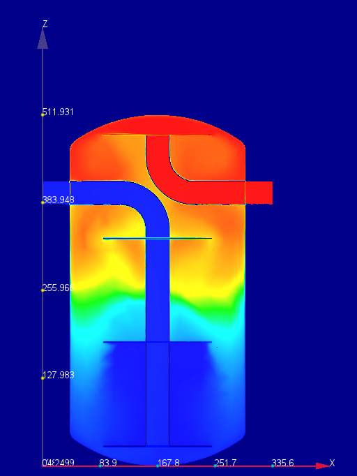
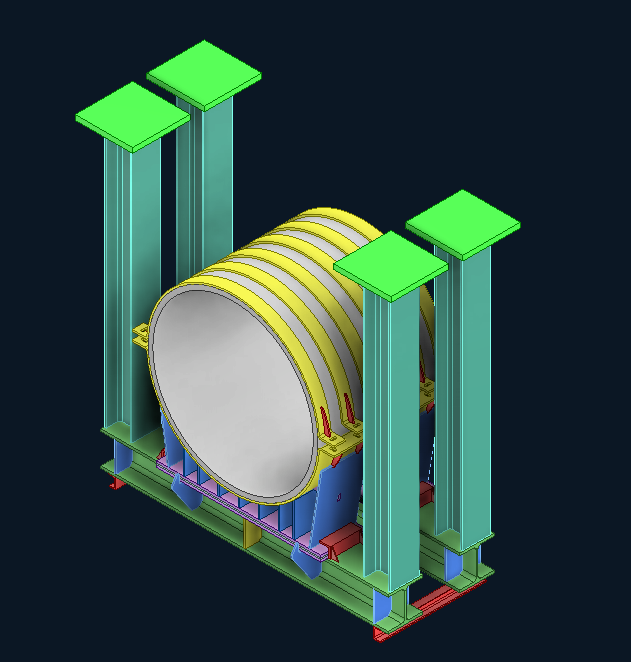

Project category
FEA & CFD Projects
Engineering analysis case studies covering computational fluid dynamics, thermal performance, nonlinear behavior, contact, structural integrity, and load response.

CFD · Thermal analysis
22 m³ Thermal Buffer Tank CFD
CFD-led development of an internal baffle arrangement that achieved a 20.8°C outlet temperature from a 30°C inlet condition.

Structural analysis · FEA
District Cooling Plant Hanger Pipe Support
A representative design for a 1100 mm pipe carrying a 51-ton vertical service load, verified using twice the actual multidirectional loads.

Structural analysis · FEA
2.5-Ton AHU Frame Support
Structural design and finite element verification of an AHU support frame with a purpose-designed locking mechanism connecting it to the main structural beams.